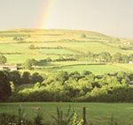
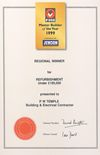

Company
PW Temple was established by Peter Temple in 1981. Specialising in the renovation
and restoration of old properties and barn conversions, the business has grown
steadily. We now have ten full-time staff as well as sub-contractors used on a regular basis for reliability and quality of work. Tradesmen
experienced in all aspects of the industry are employed, with particular emphasis
on stonework, plastering, brickwork and electrical work.
This is a family-run business, with Peter's wife Barbara managing the accounts
office and his son, Richard, an electrician. There is a continuing youth training
policy in operation, with apprentices employed in bricklaying, plastering and
electrical work. Our first apprentice, appointed in 1987 as a plasterer, won
the British Gypsum award for "Plasterer of the Year" at Carlisle College - and
this same employee continues to work for us, now as senior foreman.
Our
business has its premises in the hamlet of Aughertree, near Ireby. From this
location, on the Northern edge of the fell country of the Lake District National
Park, there is good access to the major towns of the West coast, the city of
Carlisle and the busy town of Penrith. There are also good connections to the
fast road network to both Scotland and the rest of England.

Equally
importantly, the immediate area with its unspoilt villages set in rolling countryside
provides the business with ample opportunities to maintain traditional building
skills whilst utilising the best modern practice. Work ranges from small repairs
to large conversions. Farm and barns, mills and other former industrial premises
are meticulously renovated to provide new accommodation. At all times the development
is sympathetic to the surrounding environment.

The
quality of work of PW Temple has been recognised by recent awards such as
the Allerdale Borough Council's "Built in Quality Award" and the Federation of Master
Builders' "Master Builder of the Year" regional competition success. The business
is a member of both the FMB and the NICEIC.
Peter has held the Branch Presidency and Chair of Carlisle Branch of the Federation
of Master Builders, and currently represents the branch as regional delegate
in Newcastle. His reputation for attention to quality has seen him appointed
by the Construction Industry Training Board as a Skills' Assessor at Carlisle
College, where he assesses the Plastering Apprentice Skills Tests.
PW
Temple is strongly committed to the local community from which we draw our workforce.
At the start of the new millennium, PW Temple is proud to
have achieved a sound reputation for integrity and quality, and we look forward
to building the future.